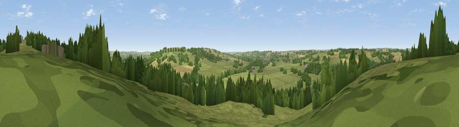

Viewpoint near Stow-on-the-Wold
#31318 in England · top 66% of its area beats it · near Stow-on-the-WoldThe view, rendered

A 360° render of this exact spot computed from the terrain model, tree cover and land cover — summer colours, afternoon light, calibrated against photographs of famous viewpoints. Real trees, hedges and buildings will differ in detail.
The panorama
Grey silhouette: terrain skyline in each direction (720 bearings, Earth curvature and refraction included). Dashed green: skyline with trees (+15 m) and buildings (+8 m) as obstacles. Blue strip: how far the ground is visible on each bearing.
Where the view opens
Wedge length = distance to the farthest visible ground on that bearing (vegetation-aware). Rings at 10, 25 and 50 km.
What fills the view
65% grassland · 17% woodland · 16% cropland · 2% built-up
Angular shares of the visible panorama (visual magnitude), not map area. Landscape diversity 0.42 (0–1 Shannon).
Key numbers
More beautiful places nearby
The staircase of upgrades: each row has a higher view potential than everything closer. Driving times are estimates from straight-line distance, calibrated against real road routing — check an actual route before setting out.
| Place | Direction | Drive | Score |
|---|---|---|---|
| Viewpoint near Stow-on-the-Wold | NNE · 1 km | ~2 min | 48.4 |
| Viewpoint near Stow-on-the-Wold | NNE · 2 km | ~5 min | 49.5 |
| Viewpoint near Icomb | SE · 2 km | ~6 min | 63.9 |
| Viewpoint near Little Rollright | ENE · 11 km | ~21 min | 64.2 |
| Viewpoint near Little Compton | NE · 11 km | ~21 min | 67.2 |
| Seven Wells Hill | NW · 12 km | ~23 min | 67.6 |
| Viewpoint near Hailes | WNW · 13 km | ~24 min | 69.6 |
| Broadway Hill | NNW · 14 km | ~25 min | 77.7 |
51.92074, -1.72914 · source: screening · position refined by local search. Computed location — check access rights before visiting.